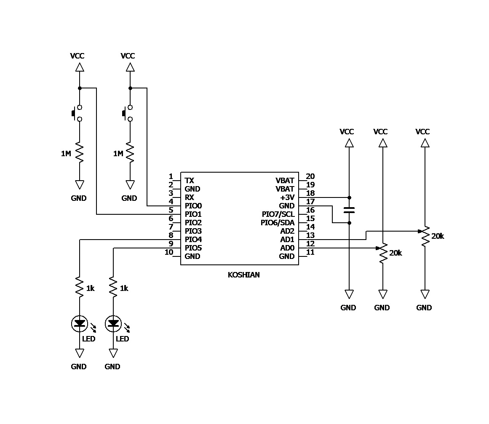
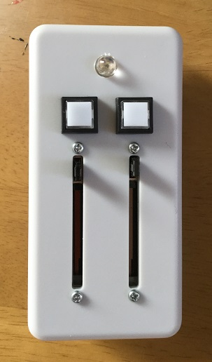
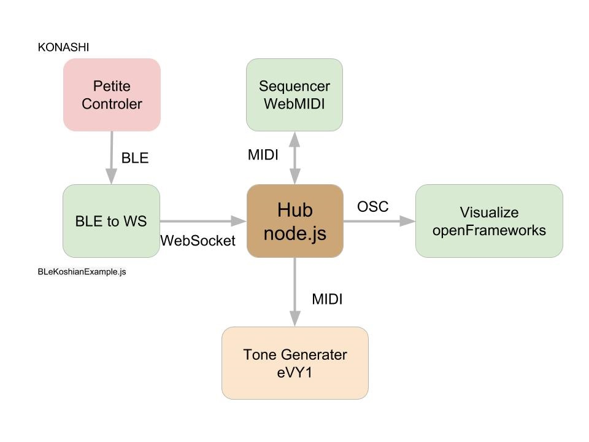

|
片手で持って、片手で操作できるプチコントローラを作成する。
Koshian というBluetooth® SMART モジュールを使用。このSMART モジュールはGPIO, A/D、UART, I2Cのインターフェースを持っていて、データをBluetoothでPCに送ること、またPCからBluetooth で制御することも可能である。これだけのインターフェースを持っていて、1,000円しないところが魅力である。しかし、Konash の端子間隔は1.27mmなので基板が特殊となり半田付けがしずらく、konashi
小型化拡張ボードを購入。こちらがいささかお高い。 回路図は次の通り。スライダーをA/Dポートに、スイッチをGPIOポートに接続している。 |
|  |
|  |
これを、タカチ電機工業 TW5-3-9 なるケースに収めている。（このケース深さが20mm 程度、Koshian を基板に実装すると9mm くらい、スライダーの高さが8mmくらいあるので,
裏蓋を閉める時に結構きつい。） KonashiはiOSを母艦としてBluetooth でやり取りをするのではれば、 konashi-jsを使って、javascript で開発をすることができる。今回はCreators' Hub に対して受信したデータをWebscket で投げたいので、node で動作する。Bluetooth LE からWebsocket 変換を作製する。 開発環境：（多少古い） Bluetooth Adapter iBUFFELO Windows 7、node v.5.4.0 及び Ubuntu 14.04、node v.5.4.0 |
|
node のBluetoothを扱うモジュールとして
noble
を、Websocket のクライアントとしては、
socket.io-client
を使用しました。
nobleとKoshianの接続については、
「NodeJSでBLE通信ができるnobleライブラリでkonashiとつなげたメモ」を参照させていただきました。また、noble のWindows 7での利用については、
「Windows 7 のnoble でBluetooth LE を使う」
を参照いたしました。
以下２つのモジュールをインストールします。 > npm install noble > npm install socket.io-client サンプルプログラムは ⇒ここ を参照下さい。さて、プチ・コントローラとCreators' Hub を使って、次のような図のパフォーマンスを行うことができます。 |
|  |